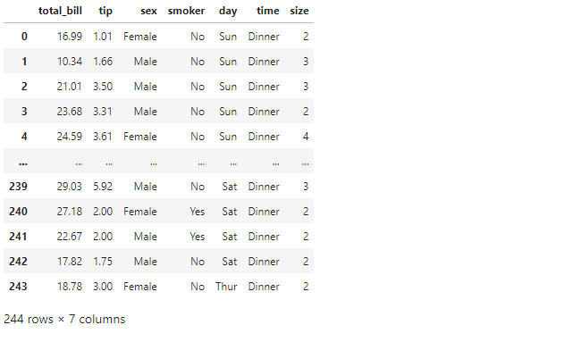
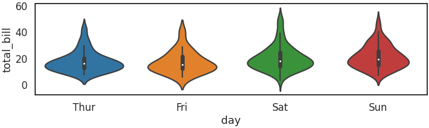
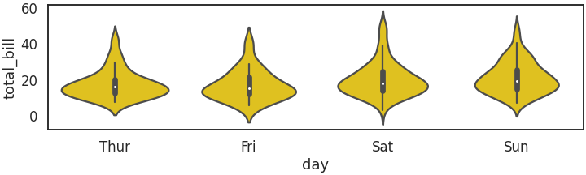
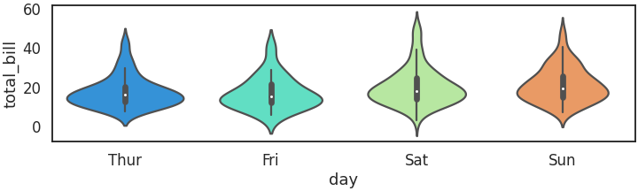
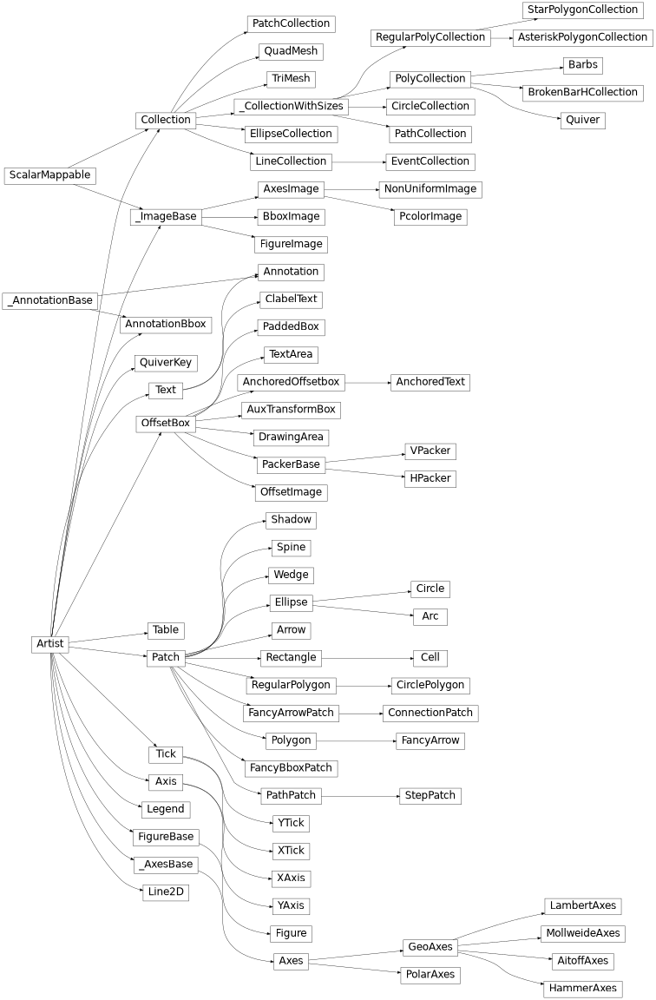
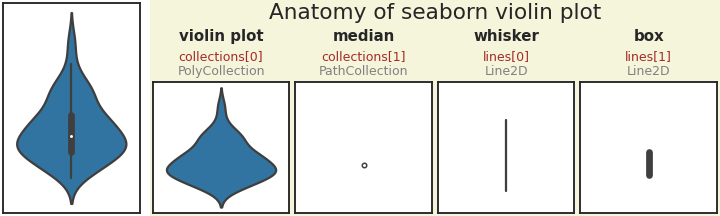
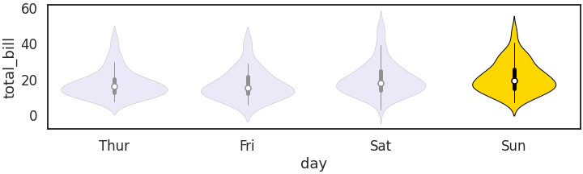
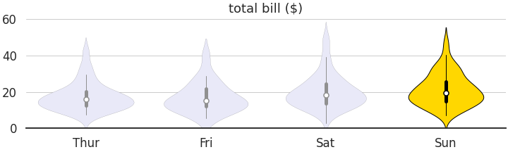
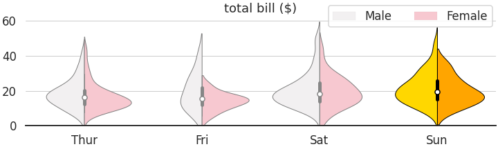

- Seaborn violin plot은 아름답습니다.
- 매끈한 곡선은 데이터의 분포를 직관적으로 알게 해 줍니다.
color와palette매개변수로 violin plot의 색을 지정할 수 있습니다.- 그러나 특정 violin plot만 색을 바꾸어 강조하는 방법은 잘 알려져있지 않습니다.
1. 예제 데이터
- seaborn의 tips 데이터셋을 사용합니다.
1
2
3
4
5
6
7
8
9
10
11
12
13
14# 기본 시각화 설정
%matplotlib inline
import matplotlib.pyplot as plt
import seaborn as sns
import pandas as pd
import numpy as np
sns.set_context("talk")
sns.set_style("white")
# 데이터셋 불러오기
df = sns.load_dataset("tips")
df
2. seaborn violin plot
2.1. 기본 plot
요일별 팁 분포를 그려봅니다.
seaborn.violinplot()을 사용합니다.1
2fig, ax = plt.subplots(figsize=(10, 3), constrained_layout=True)
sns.violinplot(data=df, x="day", y="total_bill", ax=ax)
기본 설정인
tab10palette에 따라 violin plot이 채색되었습니다.
2.2. 일괄 색 변경: color
- color 매개변수를 사용하면 violin plot들의 face color를 일괄적으로 바꿀 수 있습니다.
color="gold"를 적용한 결과입니다.1
2
3fig, ax = plt.subplots(figsize=(10, 3), constrained_layout=True)
sns.violinplot(data=df, x="day", y="total_bill",
color="gold", ax=ax)
2.3. 팔레트 변경: palette
color 대신 palette 매개변수를 사용하면 violin plot마다 다른 색이 적용됩니다.
기본값으로
tab10이 적용되어 있지만, 만약sns.set_palette()명령으로 기본값을 바꾸었다면 다른 색들이 입혀집니다.전체 palette를 바꾸지 않아도
sns.violinplot()안에palette매개변수를 지정하면 해당 plot에 한해 palette가 바뀝니다.1
2
3fig, ax = plt.subplots(figsize=(10, 3), constrained_layout=True)
sns.violinplot(data=df, x="day", y="total_bill",
palette="rainbow", ax=ax)
color매개변수나palette매개변수나 전체를 일괄적으로 바꾸는 것입니다.만약 이 중에서 일요일만 색을 바꾸고 싶다면 옵션이 없습니다.
3. Matplotlib 객체지향 적용
3.1. seaborn violin plot 해부
- seaborn은 Matplotlib을 편하게 쓰기 위해 만든 라이브러리입니다.
- 따라서 seaborn으로 그린 그림은 모두 Matplotlib 객체로 이루어져 있습니다.
- Figure와 Axes를 제외한 구성 요소는 Artist로 이루어져 있고, Artist엔 여러 분류가 있습니다.

- 이 수많은 것들 중 Collection에 주목합시다.
- 낯설게 보일 지 모르지만 파워포인트에서 여러 도형을 그룹으로 묶어놓은 것이라고 생각할 수 있습니다.
- 파워포인트에서 그룹에 속한 도형의 선이나 색을 일괄적으로 바꿀 수 있는 것처럼 Matplotlib의 Collection도 포함된 여러 객체의 속성을 한번에 바꿀 수 있습니다.
violin plot으로 어떤 Collection들이 생성되었는지 확인합니다.
1
2print(len(ax.collections))
ax.collections- 실행 결과: 8개의 collections가 있습니다.
1
2
3
4
5
6
7
8
98
[<matplotlib.collections.PolyCollection at 0x7f61db670a50>,
<matplotlib.collections.PathCollection at 0x7f61db719490>,
<matplotlib.collections.PolyCollection at 0x7f61db680ad0>,
<matplotlib.collections.PathCollection at 0x7f61db680550>,
<matplotlib.collections.PolyCollection at 0x7f61db68c9d0>,
<matplotlib.collections.PathCollection at 0x7f61db6e1cd0>,
<matplotlib.collections.PolyCollection at 0x7f61db699ad0>,
<matplotlib.collections.PathCollection at 0x7f61db699510>]
- 실행 결과: 8개의 collections가 있습니다.
PolyCollection과 PathCollection이 번갈아 등장합니다.
PolyCollection은 간단히 다각형 객체입니다.
PathCollection은 간단히 Matplotlib에서 사전 정의된 도형입니다.
뭔지 잘 모르겠지만 일단 이렇게만 넘어갑시다.
이번에는 Line2D객체를 살펴봅니다.
1
2print(len(ax.lines))
ax.lines- 실행 결과: 8개의 lines객체가 있습니다.
1
2
3
4
5
6
7
8
98
[<matplotlib.lines.Line2D at 0x7f61db670f10>,
<matplotlib.lines.Line2D at 0x7f61db680290>,
<matplotlib.lines.Line2D at 0x7f61db680e90>,
<matplotlib.lines.Line2D at 0x7f61db68c2d0>,
<matplotlib.lines.Line2D at 0x7f61db68cdd0>,
<matplotlib.lines.Line2D at 0x7f61db699250>,
<matplotlib.lines.Line2D at 0x7f61db699e90>,
<matplotlib.lines.Line2D at 0x7f61db6a62d0>]
- 실행 결과: 8개의 lines객체가 있습니다.
이들의 정체는 바로 이렇습니다.
- PolyCollection은 violin plot
- PathCollection은 median marker
- 첫번째 Line2D는 whisker
- 두번째 Line2D는 box입니다.
시각화 코드 보기/접기
1
2
3
4
5
6
7
8
9
10
11
12
13
14
15
16
17
18
19
20
21
22
23
24
25
26df_sample = df.query("day == 'Sun'")
fig = plt.figure(figsize=(10, 3), constrained_layout=True)
subfigs = fig.subfigures(1, 2, width_ratios=[1, 4])
axs_all = subfigs[0].subplots(1, 1)
sns.violinplot(data=df_sample, y="total_bill", ax=axs_all)
axs_all.set_yticks([])
axs_all.set_ylabel("")
subfigs[1].set_facecolor("beige")
axs_parts = subfigs[1].subplots(1, 4, sharey=True)
titles = ["violin plot\n\n", "median\n\n", "whisker\n\n", "box\n\n"]
artists = ["collections[0]\n", "collections[1]\n", "lines[0]\n", "lines[1]\n"]
objects = ["PolyCollection", "PathCollection", "Line2D", "Line2D"]
for i, (ax, title, artist, object) in enumerate(zip(axs_parts, titles, artists, objects)):
sns.violinplot(data=df_sample, y="total_bill", ax=ax)
parts = ax.collections + ax.lines
[p.remove() for pi, p in enumerate(parts) if i != pi]
ax.set_title(title, fontsize="small", fontweight="bold")
ax.text(0.5, 1.05, artist, transform=ax.transAxes, ha="center", color="brown", fontsize="x-small")
ax.text(0.5, 1.05, object, transform=ax.transAxes, ha="center", color="gray", fontsize="x-small")
ax.set_xticks([])
ax.set_yticks([])
ax.set_ylabel("")
subfigs[1].suptitle("Anatomy of seaborn violin plot")

- whisker와 box는 box-whisker plot의 그것들이 맞습니다.
3.2. 객체 제어
- 일단 객체로 분리되면 그 다음은 수월합니다.
.get_속성()명령으로 속성을 가져오고.set_속성(속성값)명령으로 속성을 바꿀 수 있습니다.
우리 목적은 일요일 데이터 강조입니다.
일요일 데이터를 강조하기 위해 나머지 톤을 죽입니다.
1
2
3fig, ax = plt.subplots(figsize=(10, 3), constrained_layout=True)
sns.violinplot(data=df, x="day", y="total_bill", ax=ax,
color="lavender", linewidth=0.1)매우 밋밋한 그림이 됩니다.
여기에 몇 가지 코드를 추가합니다.
먼저, 일요일 violin plot의 facecolor와 edgecolor, linewidth를 바꿉니다.
하나 건너 하나 있는
PolyCollection을 가져오기 위해if i%2 == 0을 사용합니다.1
2
3
4
5
6# violin plot: PolyCollection
violins = [c for i, c in enumerate(ax.collections) if i%2 == 0]
[v.set_edgecolor("k") for v in violins] # 전체 violin edgecolor 변경
violins[3].set_facecolor("gold") # Sunday violin facecolor 변경
violins[3].set_linewidth(1) # Sunday violin linewidth 변경
violins[3].set_edgecolor("k") # Sunday violin edgecolor 변경이번엔 marker를 조금 크고 귀엽게 만듭니다.
일요일 뿐 아니라 전체 데이터에 적용합니다.
PolyCollection 밑에 있는
PathCollection을 가져오기 위해if i%2 == 1을 사용합니다.1
2
3
4
5# median marker: PathCollection
markers = [c for i, c in enumerate(ax.collections) if i%2 == 1]
markers[3].set_facecolor("w") # Sunday median facecolor 변경
markers[3].set_edgecolor("k") # Sunday median edgecolor 변경
[m.set_sizes([50]) for m in markers] # 전체 median size 변경Line2D 객체들 차례입니다.
일요일 box plot 색을 검정으로 만듭니다.
굵기 조정은 모두에게 적용합니다.
i%2 == 0과i%2 == 1을 번갈아 사용해서 box와 whisker를 번갈아 선택합니다.1
2
3
4
5
6# box-whisker: Line2D
ls = [l for i, l in enumerate(ax.lines)]
ls[-2].set_color("k") # Sunday whisker 색상 변경
ls[-1].set_color("k") # Sunday box 색 변경
[l.set_linewidth(1) for i, l in enumerate(ls) if i%2 == 0] # 전체 box, whisher 굵기 변경
[l.set_linewidth(5) for i, l in enumerate(ls) if i%2 == 1] # 전체 box, whisher 굵기 변경이 코드들을 더하면 이런 그림이 나옵니다.
마지막으로 불필요한 요소를 제거합니다.
1
2
3
4
5
6ax.set_ylim(0, )
ax.set_xlabel("")
ax.set_ylabel("")
ax.set_title("total bill ($)")
ax.spines[["left", "top", "right"]].set_visible(False)
ax.grid(axis="y", lw=1)
3.3. 응용: hue & split
- seaborn violin plot에 hue와 split을 적용하면 의미 전달도 좋고 그림도 제법 멋집니다.
- 여기에도 위에서 사용한 기술을 똑같이 적용할 수 있지만, 주의사항이 하나 있습니다.
- 반쪽짜리 violin plot 두 개와 center marker가 번갈아 나오기 때문에 list comprehension을 조금 바꿔야 합낟.
i%3 == 0은 Male violin plot,i%3 == 1은 Female violin plot,i%3 == 2는 center marker입니다.시각화 코드 보기/접기
1
2
3
4
5
6
7
8
9
10
11
12
13
14
15
16
17
18
19
20
21
22
23
24
25
26
27
28
29
30
31
32
33
34
35
36
37
38
39
40
41
42
43
44
45fig, ax = plt.subplots(figsize=(10, 3), constrained_layout=True)
sns.violinplot(data=df, x="day", y="total_bill", ax=ax,
color="pink", hue="sex", split=True, linewidth=0.1)
### violin plot: PolyCollection
# Male
violins_M = [c for i, c in enumerate(ax.collections) if i%3 == 0]
[v.set_edgecolor("gray") for v in violins_M]
[v.set_linewidth(1) for v in violins_M]
violins_M[3].set_facecolor("gold") # Sunday violin facecolor 변경
violins_M[3].set_linewidth(1) # Sunday violin facecolor 변경
violins_M[3].set_edgecolor("k") # Sunday violin edgecolor 변경
# Female
violins_F = [c for i, c in enumerate(ax.collections) if i%3 == 1]
[v.set_edgecolor("gray") for v in violins_F]
[v.set_linewidth(1) for v in violins_F]
violins_F[3].set_facecolor("orange") # Sunday violin facecolor 변경
violins_F[3].set_linewidth(1) # Sunday violin facecolor 변경
violins_F[3].set_edgecolor("k") # Sunday violin edgecolor 변경
# median marker: PathCollection
markers = [c for i, c in enumerate(ax.collections) if i%3 == 2]
markers[3].set_facecolor("w") # Sunday median facecolor 변경
markers[3].set_edgecolor("k") # Sunday median edgecolor 변경
[m.set_sizes([50]) for m in markers] # 전체 median size 변경
# # box-whisker: Line2D
ls = [l for i, l in enumerate(ax.lines)]
ls[-2].set_color("k") # Sunday whisker 색상 변경
ls[-1].set_color("k") # Sunday box 색 변경
[l.set_linewidth(1) for i, l in enumerate(ls) if i%2 == 0] # 전체 box, whisher 굵기 변경
[l.set_linewidth(5) for i, l in enumerate(ls) if i%2 == 1] # 전체 box, whisher 굵기 변경
# # spines 제거, grid 추가, xlabel 제거, ylabel 제거
ax.set_ylim(0, )
ax.set_xlabel("")
ax.set_ylabel("")
ax.set_title("total bill ($)")
ax.spines[["left", "top", "right"]].set_visible(False)
ax.grid(axis="y", lw=1)
legend = ax.legend()
legend.remove()
fig.legend(loc="upper right", ncol=2)

4. 결론
- seaborn violin plot도 결국 Matplotlib 객체 모음입니다.
- 여러분의 아이디어를 객체 지향 방식에 마음껏 실어 나르기 바랍니다.